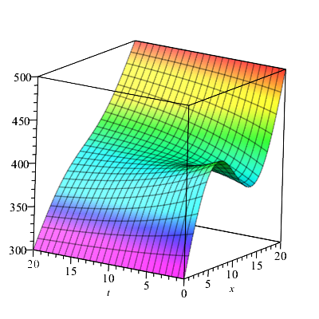
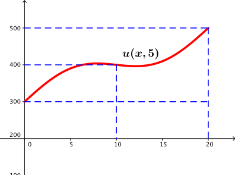

3.3. Uç Noktalarda Farklı Sıcaklıklar
Kayıt Tarihi:
Son Güncelleme:
Bu derste ele aldığımız ısı iletim problemini az miktar zorlaştırıyoruz, uç noktalardaki sıcaklıkların farklı olduğu durumu ele alıyoruz. Bu durumda önceki derslerde klasik ısı iletim problemi için elde ettiğimiz sonuçları kullanarak çözümlerin varlığına ve iyi tanımlılığına ulaşacağız.
Anahtar Kelimeler: denge durumu sıcaklığı · geçici çözüm · Isı denklemi$T_1$ ve $T_2$ negatif olmayan sabitler olsun. Ayrıca $f$ fonksiyonu da $f(0)=T_1$ ve $f(a)=T_2$ eşitliklerini sağlayan, sürekli, negatif olmayan, ve türevi parçalı sürekli olan bir fonksiyon olsun. Bu bölümde \begin{eqnarray} u_{t}=ku_{xx} ,&& \qquad(x,t)\in D\text{ için}\label{bvp2-mod-1}\tag{3.3.1}\\ u(0,t)=T_1, && \qquad t\geq0\text{ için}\label{bvp2-mod-2}\tag{3.3.2}\\ u(a,t)=T_2, && \qquad t\geq\text{ için}\label{bvp2-mod-3} \tag{3.3.3} \\ u(x,0)=f(x), && \qquad0\leq x\leq a \text{ için}\label{bvp2-mod-4}\tag{3.3.4} \end{eqnarray}
sınır değer problemini ele alacağız. \eqref{bvp2-mod-2} ve \eqref{bvp2-mod-3} eşitlikleri sağlayan fonksiyonların toplamları bu koşulları sağlamayacağından bu durumda sınır koşullarımız lineer değildir, dolayısıyla süperpozisyon ilkesini kullanarak bir çözüm elde edemeyiz.
Fakat biraz fiziksel gözlem işimizi kolaylaştırabilir. Yeterince uzun zaman sonra başlangıç sıcaklığı dağılımının çubuğun genel sıcaklık dağılımına etkisinin kaybolduğunu ve çubuğun genel sıcaklık dağılımının zamandan bağımsız olduğunu bekleyebiliriz. eğer yeterince büyük $t$ sayıları için bu sıcaklık dağılımı $U$ fonksiyonu ile gösterilirse, bu fonksiyona denge durumu sıcaklığı fonksiyonu denir, $U$ fonksiyonu sadece $x$ değişkenine bağlıdır ve \eqref{bvp2-mod-4} koşulunu sağlaması gerekmez. Yani problemimiz $$\begin{array}{l} 0=kU''\\ U(0)=T_1\\ U(a)=T_2 \end{array}$$ halini alır ve buradan denge durumu çözümünün $$U(x)=\frac{T_2-T_1}{a}x+T_1$$ olduğu kolayca gösterilebilir.
Şimdi, eğer $u$ fonksiyonu \eqref{bvp2-mod-1}-\eqref{bvp2-mod-4} probleminin bir çözümü ise bu durumda $v:=u-U$ fonksiyonu da $$\begin{array}{ll} v_{t}=kv_{xx} ,& \quad(x,t)\in D\text{ için}\\ v(0,t)=0, & \quad t\geq0\text{ için}\\ v(a,t)=0, & \quad t\geq0\text{ için} \\ v(x,0)=f(x)-U(x), & \quad0\leq x\leq a \text{ için} \end{array} $$ probleminin bir çözümü olur. $U$ fonksiyonu sürekli türevlere sahip olduğundan bu problemin bir çözümü Teorem 3.1.3 ile verilmiştir. Böylece ele aldığımız \eqref{bvp2-mod-1}-\eqref{bvp2-mod-4} sınır değer probleminin bir çözümü olan $u=U+v$ kolaylıkla elde edilmiş olur.
Şimdi $u_1$ ve $u_2$ ile \eqref{bvp2-mod-1}-\eqref{bvp2-mod-4} probleminin sırasıyla başlangıç sıcaklık dağılımları $f$ ve $g$, ve uç nokta sıcaklıkları $T_{1,f}$, $T_{2,f}$ ile $T_{1,g}$, $T_{1,g}$ olan çözümleri olsunlar. Eğer $|f-g|$ fonksiyonunun $[0,a]$ aralığındaki maksümum değerini $M_{f-g}$ ile gösterirsek, maksimum prensibi gereği $$|u_1(x,t)-u_2(x,t)|\leq\max\left\{ M_{f-g},\;|T_{1,f}-T_{1,g}|,\;|T_{2,f}-T_{2-g}| \right\}$$ olduğu görülür. Yukarıdaki eşitsizlik de bize \eqref{bvp2-mod-1}-\eqref{bvp2-mod-4} probleminin bulduğumuz çözümünün Hadamard anlamında kararlı olduğunu ve Teorem 3.2.2 ile verildiği gibi $f\geq0$ ise $u\geq0$ olduğunu gösterir.
Elde ettiğimiz bu çözümün $v$ parçasının $t\rightarrow\infty$ için $v(x,t)\rightarrow0$ özelliğinde olduğu bir önceki bölümün sonunda gösterilmişti. Bundan dolayı çözümün bu parçasına geçici çözüm denir. Sonuç olarak ele aldığımız \eqref{bvp2-mod-1}-\eqref{bvp2-mod-4} probleminin tam çözümü, denge durumu çözümü ile geçici çözümün toplamından oluşmaktadır.
Örnek 3.3.1
20 cm uzunluğunda sabit $400^\circ K$ başlangıç sıcaklıklı bir çubuğu ele alalım. Çubuğun uç noktalarında sıcaklığı sırasıyla $300^\circ K$ ve $500^\circ K$'de sabit tutulmaktadır. Bu durumda $a=20$, $T_1=300$, $T_2=500$ ve denge durumu çözümü $$U(x)=\frac{500-300}{20}x+300=10x+300$$ olur. Geçici çözümün sağlaması gereken başlangıç sıcaklığı da $$v(x,0)=f(x)-U(x)=400-10x-300=100-10x$$ olur. Ayrıca $$c_n=\frac{2}{20}\int_{0}^{20}(100-10x)\sin\frac{n\pi}{20}x\,dx=\left\{\begin{array}{ll}0,\quad & n\text{ tek ise}\\\frac{400}{n\pi},\quad & n\text{ çift ise}\end{array}\right.$$ olduğu kolaylıkla gösterilebilir. Böylece tam çözüm $$u(x,t)=U(x)+v(x,t)=10x+300+\frac{200}{\pi}\sum\limits_{n=1}^{\infty}\frac{1}{n}e^{-n^2\pi^2kt/100}\sin\frac{n\pi}{10}x$$ olarak elde edilmiş olur. Eğer çubuk örneğin aluminyum ise bu durumda $k=0.84\,cm^2/sn$ olur, ayrıca $e^{-\pi^2k/100}\approx0.92$ olup yeterince büyük $t$ sayıları için $$u(x,t)\approx 10x+300+\frac{200}{\pi}0.92^t\sin\frac{\pi}{10}x$$ yazabiliriz. 
Şekil 3.4: Yukarıdaki örnekte verilen sınır değer probleminin çözümü ve $t=5$ için grafiği.
3.2. Çözümün Tekliği ve Kararlılığı
Fourier Analizi
3.4. Uçları Yalıtımlı Çubuk